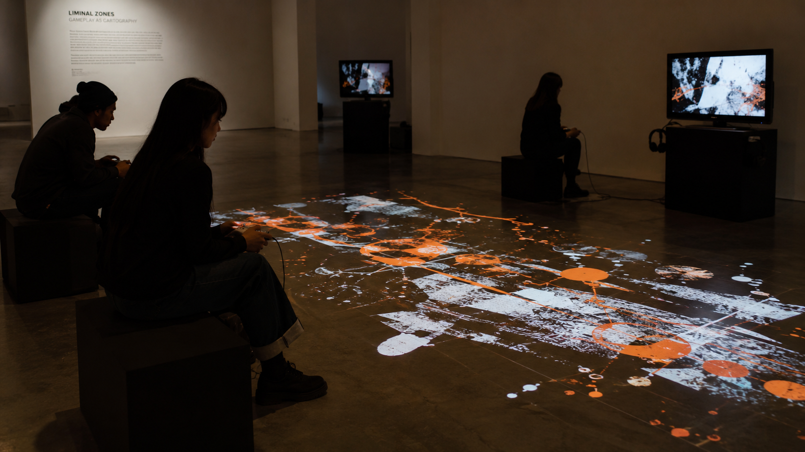
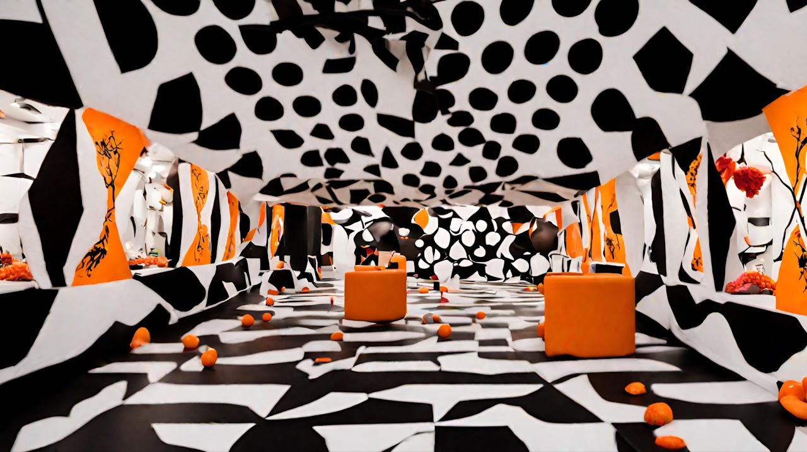
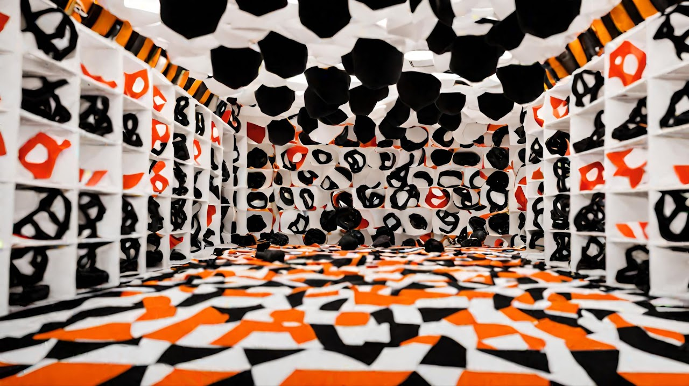
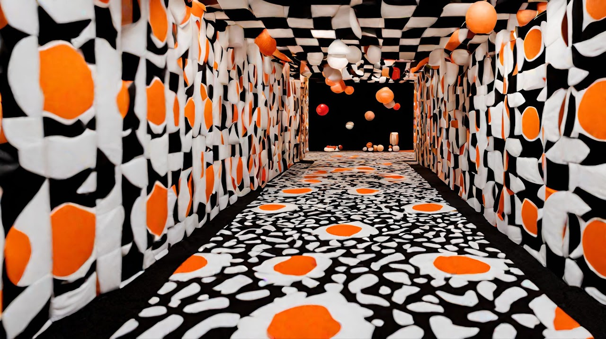
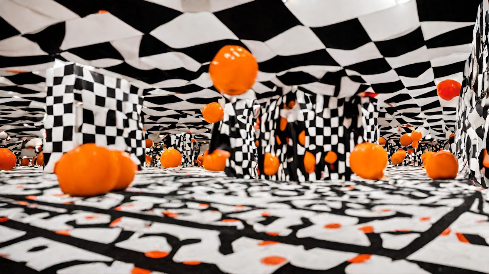

Yolk
Yolk is a navigable environment built in Blender and Unity, textured with digitally drawn imagery. The player begins in a square room. The room melts.
As the environment destabilises, it swallows the player and reproduces, generating infinite interior spaces through a process of parthenogenesis, each room a self-contained offspring of the last. No external input is required for replication. The architecture propagates from itself.
Each new room mutates. The aesthetic register is borrowed from the failure states of generative image systems, the specific visual errors produced when AI models approximate but cannot hold form: lines that curve where they should be straight, objects that repeat as stamps across a surface, geometries that lose coherence mid-resolution. Yolk treats these artefacts not as errors to be corrected but as a visual language in their own right, one that reveals something about how images are synthesised, stored, and reproduced under computational pressure.
Installation




